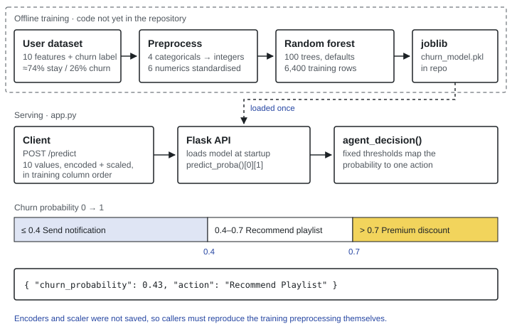

Problem
Subscription products lose revenue when users quietly stop listening. A churn model can flag who is at risk, but a probability like 0.63 doesn't tell anyone what to do. The useful output is a decision.
Users and context
The intended user is a retention team at a music-streaming service. The data describes listeners — how long they listen, how many songs they play, how often they skip, whether they hear ads — and the actions the system recommends are the levers such a team actually has: a notification, a playlist, or a discount.
Data
Each row is one user, with a binary label for whether they churned. The model was trained on ten features:
- Profile: gender, age, country
- Plan and device: subscription type, device type, offline listening
- Behaviour: listening time, songs played per day, skip rate, ads listened per week
About one user in four churned in the training data (roughly 74% stayed, 26% left), so the classes are imbalanced. The training set was 6,400 rows. Add the dataset's name and source.
Approach
I split the problem in two: a model that estimates churn probability, and a simple, readable rule layer that decides the response. Keeping the rules separate from the model means a team can change its retention policy without retraining.

app.py; the training details are read from the saved model.Model and implementation
- Preprocessing. The four categorical columns (gender, country, subscription type, device type) are encoded as integers, offline listening is 0/1, and the six numeric columns are standardised to zero mean and unit variance.
- Model. A scikit-learn
RandomForestClassifierwith 100 trees andrandom_state=42, otherwise on library defaults. A random forest suits this data: it handles a mix of numeric and categorical features, captures interactions such as "high skip rate on a free plan" without manual feature engineering, and needs no scaling to work. - Serving. The trained model is saved with joblib and loaded once when the Flask app starts.
POST /predicttakes the ten feature values, callspredict_proba, and passes the churn probability toagent_decision. - Decision layer. Above 0.7, offer a premium discount; between 0.4 and 0.7, recommend a playlist; otherwise send a notification. The API returns both the probability and the action, so a front end can show the reasoning, not just the verdict.
What drives the predictions
The forest's feature importances put listening behaviour first: listening time (0.20), songs played per day (0.18), skip rate (0.17) and age (0.17) account for about 70% of the total, followed by country (0.09). Subscription type, device type, gender and ads each sit around 0.04–0.05, and offline listening barely matters (0.01).
Two caveats. Impurity-based importance favours continuous features with many split points, so it can understate categorical ones; permutation importance on held-out data is the fairer check. And importance shows what the model relies on, not what causes churn.
Results
Add test-set results from your notebook: precision, recall, F1 and ROC-AUC for the churn class, plus the confusion matrix. With 26% churners, accuracy alone is misleading — a model that predicts "stays" for everyone scores about 74%.
Limitations and what I'd improve
- Save the preprocessing with the model. The encoders and scaler weren't saved, so callers must send already-encoded, already-scaled values in the exact training column order. Wrapping them in a single scikit-learn
Pipelinewould let the API accept raw values like "age: 27". - Handle the imbalance deliberately. The model uses no class weighting or resampling. Trying
class_weight="balanced"and tuning the decision threshold for recall would catch more churners. - Limit tree growth. Trees grow to full depth (23–36 levels, about 1,400 leaves each on 6,400 rows), which risks memorising the training data. Cross-validated tuning of depth and leaf size would show whether that is costing accuracy.
- Tie thresholds to cost. The 0.4 and 0.7 cut-offs are fixed by hand. Setting them from the cost of a discount against the value of a retained user would make the actions defensible.
- Validate inputs and pin dependencies. Accept named fields with validation, and fill in
requirements.txtso the service is reproducible.
Proposed next step: a retention dashboard
Not built yet — this is the planned interface for the model.
The API answers one user at a time. A retention team needs to see the whole picture: how risk is distributed across users, which listeners are most at risk and why, and a one-click way to act. The dashboard would show a risk distribution, a ranked list of users with the suggested action and the top factors behind each score, and the model's evaluation metrics, so the team knows how far to trust it.